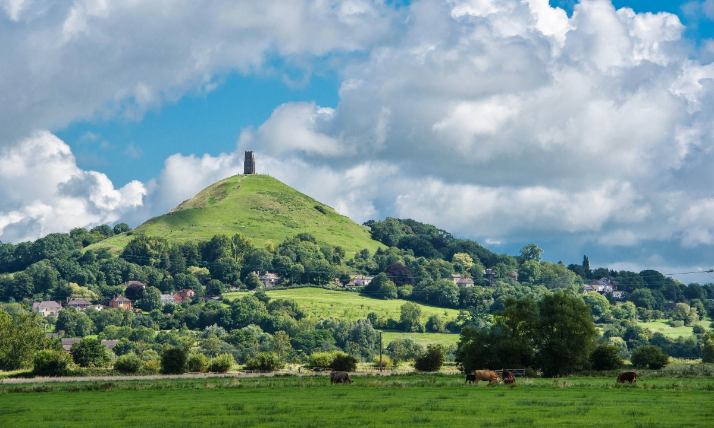

<!DOCTYPE html>
<html lang="en">
  <head>
    <title>Strode College Map</title>
    <link rel="stylesheet" href="https://unpkg.com/leaflet@1.9.2/dist/leaflet.css" integrity="sha256-sA+zWATbFveLLNqWO2gtiw3HL/lh1giY/Inf1BJ0z14=" crossorigin="" />
    <script src="https://unpkg.com/leaflet@1.9.2/dist/leaflet.js" integrity="sha256-o9N1jGDZrf5tS+Ft4gbIK7mYMipq9lqpVJ91xHSyKhg=" crossorigin=""></script>
    <script src='https://api.mapbox.com/mapbox.js/plugins/leaflet-fullscreen/v1.0.1/Leaflet.fullscreen.min.js'></script>
    <link href='https://api.mapbox.com/mapbox.js/plugins/leaflet-fullscreen/v1.0.1/leaflet.fullscreen.css' rel='stylesheet' />
    <script src="L.Control.MousePosition.js"></script>
    <link rel="stylesheet" href="L.Control.MousePosition.css" />
  </head>
  <body>
   <div style="height: 450px" id="map"></div>
    <script>
      var map = L.map('map').setView([51.1444, -2.6986], 10);
      L.tileLayer('https://tile.openstreetmap.org/{z}/{x}/{y}.png', {
    maxZoom: 19,
    attribution: '&copy; <a href="http://www.openstreetmap.org/copyright">OpenStreetMap</a>'
}).addTo(map);
     map.addControl(new L.Control.Fullscreen());
     L.control.mousePosition().addTo(map);      
     var marker1 = L.marker([51.14470, -2.69871]).addTo(map);
     marker1.bindPopup("<b>Glastonbury Tor!</b><br>");
    </script>
  </body>
</html>
